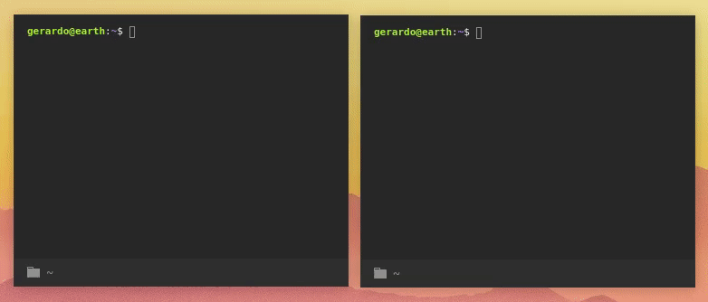

if you're reading this it's too late Lol
i've been learning a little bit about websockets and wanted to make a small project with this technology. a chat app is a perfect project to do for websockets since they're a very common feature in a lot of user-facing products. additionally, it's a problem that can be solved with in multiple scales: ranging from a very simple websockets-based approach (which i am currently doing) to a production-ready app with security, realiability, and user-friendlyness in mind.
i wanted to have a cool UI but i realized that having a chat app in your terminal is probably cooler and would require less resources.
the above GIF shows an example between two users: alice & bob. there exists a single chatroom for now but in the future i hope to add the ability to create multiple chatrooms with different admin and member privalages.
i used javascript and node js to build this with sockets.io as the websocket library as well as mongo db as the database to store user information.
usageclone the repository and navigate to the directory
$ git clone https://github.com/gerardo-torres/ultra-chat
$ cd ultra-chatinstall dependencies and start the server
$ npm install
$ node server.jsOn another terminal, navigate to the directory and start the application
$ cd ultra-chat
$ node index.jscheck out the github repo: github.com/gtr/ultra-chat